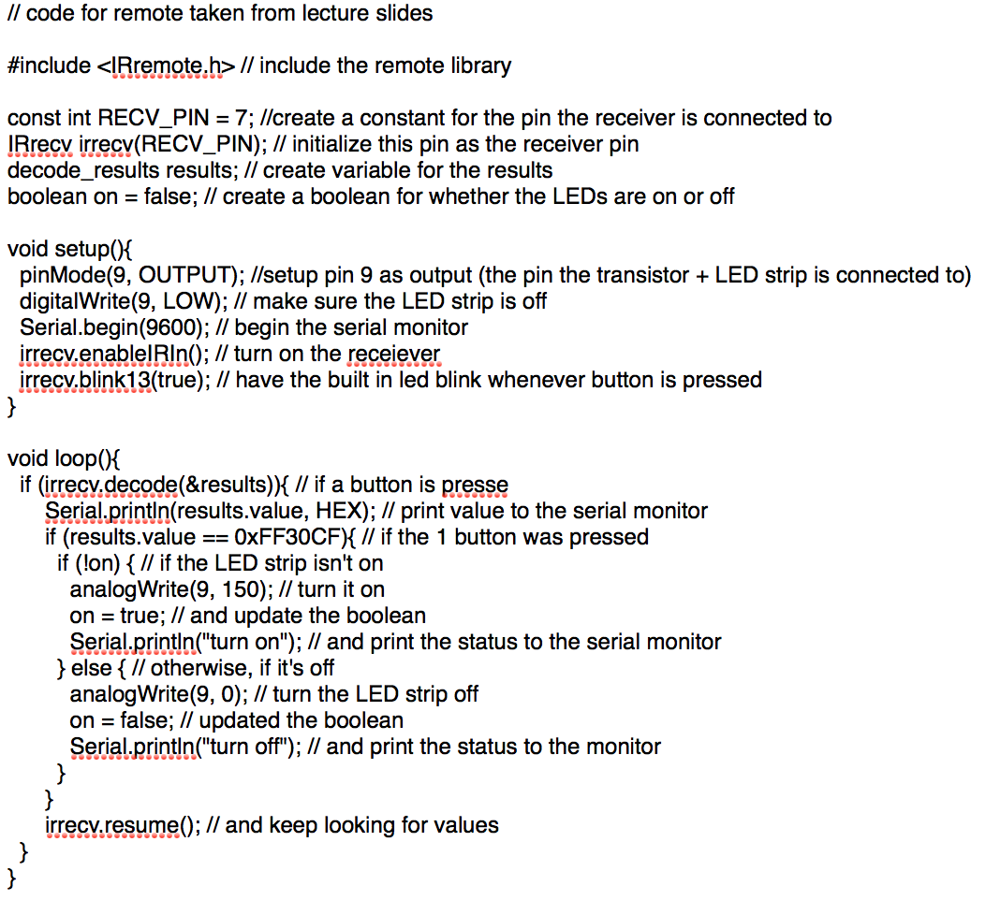

Alison's Assignment 4: Higher Voltage + Transistors!
Here is all the documentation for assignment 4!
Schematic
This is my schematic! According to the internet, MOFSET transistors can handle 30amps and 120V. We are only connecting it to 9V, and using a load (the LED Strip) to create resistance.
Code

This is my code. It works by having the reciever wait for the #1 button to be pressed, and if the LED's are off, it turns them on, and if they're on, it turns them off. Part of my code is copied from lecture slides (the stuff for remotes).
Circuit
This is a picture of my circuit!

And finally, here's a gif of my circuit's operation. I couldn't have done this assignment without the help of TJ in class in figuring out how to use remotes and Jasper helping us setup the LED strip/servo motor in class!